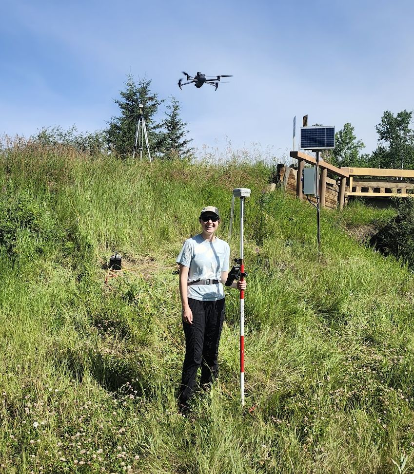

{kind=link}
Hello! My name is Alex Bevington. I am an Assistant Professor in Geography, Earth and Environmental Sciences at the University of Northern British Columbia, and a Licensed Professional Agrologist. My interests are wide-ranging, but are generally captured by the following themes: Hydrology, Cryosphere, Geography, and Earth Observation.
Before joining UNBC I spent a decade with the BC Ministry of Forests as a Research Earth Scientist and then Research Hydrologist, work that still shapes how the lab operates: applied, open, and built around data that practitioners can actually use.
I lead the Watershed Remote Sensing Lab (Wat-RS). The motivation of the lab is to tackle wicked problems in the world of water security and public safety, and contribute to solutions with science and research.
Current Projects
RemoteLogger for Model Validation
Low-cost real-time data loggers
https://watershed-rs.shinyapps.io/remotelogger/
We are developing modular, low-cost, and low-power loggers for hydrological and environmental monitoring. The RemoteLogger system integrates in-situ sensors (e.g., water level, snow depth, water temperature) with real-time communication capabilities (e.g., wifi, LTE, or Iridium), offering scalable monitoring solutions for remote areas. RemoteLogger aimes to help democratize access to environmental data by reducing costs while maintaining scientific-grade reliability.
watershedBC for Decision Support
Interactive watershed information platform
https://bcgov-env.shinyapps.io/watershedBC/
WatershedBC is an open-access decision-support tool that enables users to quickly visualize and extract key information about watersheds across British Columbia. Designed for practitioners, researchers, and the public, it leverages provincial datasets and automated workflows to deliver insights on hydrology, land cover, and climate attributes at nested watershed scales.
Keeping up with Rapid Cryospheric Change
The cryosphere—including glaciers, snow, and permafrost—is one of the most visible indicators of climate change in western Canada. We combine in-situ measurements (mass balance, snow depth, borehole permafrost temperatures) with satellite observations and conceptual models to monitor change and explore its consequences for water resources, ecosystems, and communities. This work provides critical data for water supply planning, hazard assessments, and long-term climate adaptation strategies.
Understanding Slope Stability and Hazards
Landslide hazards represent a significant risk to infrastructure and communities, particularly in mountainous terrain. This project focuses on building robust InSAR workflows using Sentinel-1, RADARSAT Constellation Mission, and future missions (e.g., NASA–ISRO NISAR) to detect and track precursory slope deformation. Our objective is to transition InSAR from a research tool into an operational, near-real-time monitoring system that can support emergency management and land-use planning.
Water Temperature Dynamics in Freshwater
Water temperature regulates ecological processes and habitat viability for fish and other aquatic life. We are integrating field-based temperature monitoring networks with thermal infrared remote sensing and hydrological models to better understand the spatial and temporal dynamics of stream and lake temperatures. These datasets will help predict thermal stress on ecosystems under climate change and guide management strategies for cold-water refugia.
Shallow Surface Water and Groundwater Interactions
Surface water and groundwater are often managed as separate resources, but inmost watersheds they are a single connected system. Where and when that exchange happens controls low flows in late summer, the persistence of cold-water refugia, and how quickly a watershed recovers from drought or disturbance.
Integrated Remote Sensing Analysis
Our lab takes on a broad portfolio of remote sensing projects, reflecting the versatility of geospatial technologies. Current and past work includes: Time-series analysis of vegetation and disturbance dynamics; Development of novel cloud-free mosaic generation approaches; Multisensor fusion for forest attribute mapping; and Detection and attribution of human impacts on landscapes over time. This theme highlights classification, change detection, and statistical modeling of environmental processes using Earth observation data.
Partners
We work with First Nations, government agencies, fisheries authorities, and academic collaborators across British Columbia. Our research is shaped by the questions these partners bring forward.
First Nations
- Blueberry River First Nations
- Takla Nation
- Tsay Keh Dene Nation
- Lheidli T’enneh First Nation
- Upper Fraser Fisheries Conservation Alliance
- Skeena Fisheries Commission
- Gitanyow Fisheries Authority
Stewardship Organizations
- Nechako Environment and Water Stewardship Society
Provincial
- BC Ministry of Forests — Research
- BC Ministry of Water, Land and Resource Stewardship
- BC Energy Regulator
Academic
- VIU — Coastal Hydrology Researcg Lab - Dr. Bill Floyd
- UNBC — Cryosphere Lab - Dr. Brian Menounos
- UNBC — Mountain Snow Hydrology Lab - Dr. Joseph Shea
- UNBC — Hydroclimate Infomatics Lab - Dr. Siraj ul Islam
- UNBC — Northern Hydrometeorology Group - Dr. Stephen Déry